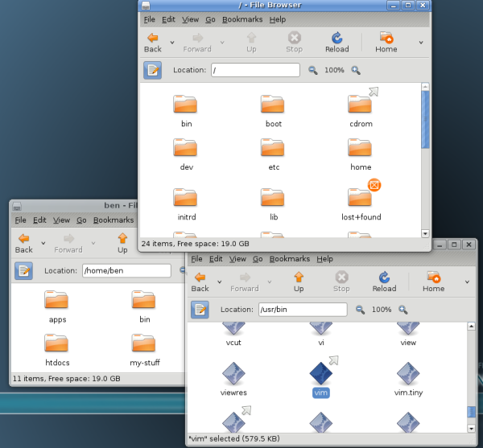

CommandLineIntro: MovingAround
Anyone who has used a graphical interface has moved between folders. A typical view of folders appears in Figure 1, where someone has opened a home directory, then a folder named "my-stuff" under that, and a folder named "music" under that.
Figure 1 : Folders
When you use the command line, folders are called directories. That's just an older term used commonly in computing to refer to collections of things. (Try making an icon that suggests "directory"). Anything you do in a folder on the desktop is reflected in the directory when you're on the command line, and vice versa. The desktop and the command line provide different ways of viewing a directory/folder, and each has advantages and disadvantages.
Files contain your information--whether pictures, text, music, spreadsheet data, or something else--while the directories are containers for files. Directories can also store other directories. You'll be much more comfortable with the command line once you can move around directories, view them, create and remove them, and so on.
Directories are organized, in turn, into filesystems. Your hard disk has one type of filesystem, a CD-ROM or DVD has another, a USB mass storage device has yet another, and so on. That's why a CD-ROM, DVD, or USB device shows up as something special on the desktop when you insert it. Luckily, you don't have to worry much about the differences because both the desktop and the terminal can hide the differences. But sometimes in this book we'll talk about the information a filesystem has about your files.
The "first" directory is called the root and is represented by the name / (just a forward slash). You can think of all the directories and files on the system as a tree that grows upside-down from this root (Figure 2):

Figure 2 : Root Directory
Every file and directory in the system has an "address" called its absolute path or sometimes just its path. It describes the route you have to follow starting from the root that would take you to that particular file or directory.
For example, suppose you like the vim editor that we'll introduce in a later chapter, and are told you can start it by running the command /usr/bin/vim. This point underlines what we said in an earlier chapter: commands are just executable files. So the vim editor is a file with the path /usr/bin/vim, and if you run that command /usr/bin/vim you will execute the editor. As you can see from these examples, the slash / is also used as a separator between directories.
Can you find /usr/bin/vim in Figure 2? The pathname can be interpreted as follows:
You are just getting used to the command line, and it may feel odd to be typing while reading this book. If you feel any confusion in this section, try scribbling the directory tree in Figure 2 on paper. Draw arrows on the paper as you run the commands in this section, to help orient you to where you are.
Note that you can't tell whether something is a file or a directory just by looking at its path.
When you work with the command line you will be always working "in" a directory. You can find the path of this directory using the command pwd (print working directory), like this:
$ pwd /home/ben
You can see that pwd prints an absolute path. If you want to switch your working directory you can use the command cd (change directory) followed by an argument which points to the target directory:
$ cd /
You just changed your working directory to the root of the filesystem! If you want to return to the previous directory, you can enter the command:
$ cd /home/ben
As an alternative, you can "work your way" back to /home/ben using relative paths. They are called that because they are specified "in relation" to your current working directory. If you go back to the root directory, you could enter the following commands:
$ cd / $ cd home $ cd ben $ pwd /home/ben
The first command changes your current working directory to the root. The second changes to home, relative to /, making your current working directory /home. The third command changes it to ben, relative to /home, landing you in /home/ben.
Every user in the system has a directory assigned to him or her, called the home directory. No matter what your current working directory is, you can quickly return to your home directory like this:
$ cd
That is, enter the cd command without any arguments.
All your files and preferences are stored in your home directory (or its subdirectories). Every user of your system with a login account gets her own home directory. Home directories are usually named the same as users' login names, and are usually found in /home, although a few systems have them in /usr/home. When you start your terminal, it will place you in your home directory.
There's a special shortcut to refer to your home directory, namely the symbol ~ (usually called a tilde, and found near the very left top of most keyboards). You can use it as part of more complex path expressions, and it will always refer to your home directory. For example, ~/Desktop refers to the directory called Desktop that usually exists within your home directory.
The entries . and .. are special and they exist in every directory, even the root directory itself (/). The first one is a shorthand for "this directory" while the latter is a shorthand for "the parent directory of this directory." You can use them as a relative path, and you can try and see what happens when you do this:
$ pwd /usr/bin $ cd . $ pwd /usr/bin
If vim is in /usr/bin, at this point you could run it by typing the relative path:
$ ./vim
Continuing from the previous example, you can do this:
$ cd .. $ pwd /usr
Since they are actual entries in the filesystem, you can use them as part of more complex paths, for example:
$ cd /usr/bin $ pwd /usr/bin $ cd ../lib $ pwd /usr/lib $ cd ../.. $ pwd / $ cd home $ pwd /home $ cd ../usr/bin $ pwd /usr/bin
The parent directory of the root directory, /.., is root itself.
Try moving around your computer on the command line and you will soon get used to it!
There has been error in communication with Booktype server. Not sure right now where is the problem.
You should refresh this page.